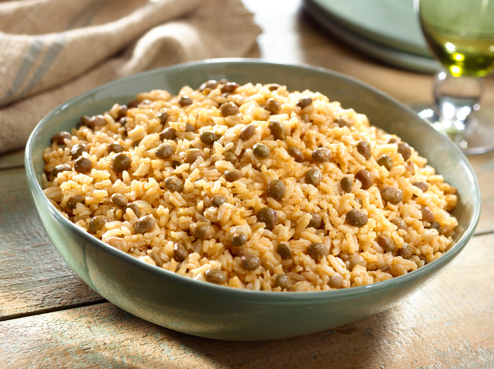

The Moro de guandules is a Dominican dish that consists of rice with pingeon peas. It's an easy dish to do, but that doesn't change how good it tastes or how good it is as an accompaniment to any other dish.
Well, now that you have an idea of what the moro de guandules is, let's do it!. You will need:
- 2 pounds of rice.
- 1 sopita. (Chiken bouillon cube, if you don't find one, you can use chicken stock.)
- 1/4 of an onion.
- 1/4 cubanela pepper.
- Oil. (can be whatever you want)
- Concentrated tomato paste.
- 2 garlic cloves.
- Cilantro.
- 1 can of pingeon peas.
- 1 can of coconut milk.
- In a large cauldron, you're going to put a little bit of oil in it and heat it on medium heat.
- When the oil is hot, you're going to put the 1/4 of an onion, the 1/4 of cubanela peper, 1/2 spoon of concentrated tomato paste, the 2 garlic cloves (sliced), a bit of cilantro (sliced), and the sopita and let it fry for like 3-4 minutes.
- While everything is cooking in the cauldron, go and wash the rice two times.
- Now you add the can of coconut milk and the can of pingeon peas. Let it mix the flavors for 5 minutes.
- Add the rice and mix it.
- Now we cover the cauldron and let it boil. Stir from time to time.
- When we see that there is not more water in the bottom of the pot and the rice is cooked (taste to corroborate this), you will know that you have successfully made a moro of guandules.
Now you just have to serve the dish and enjoy!.